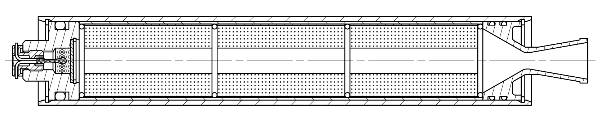
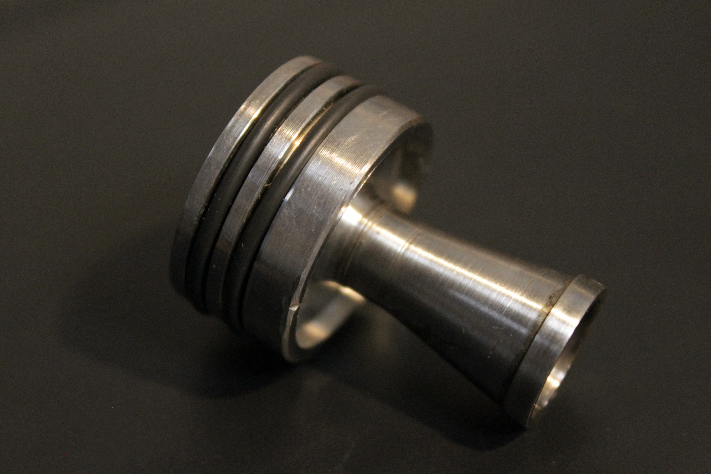
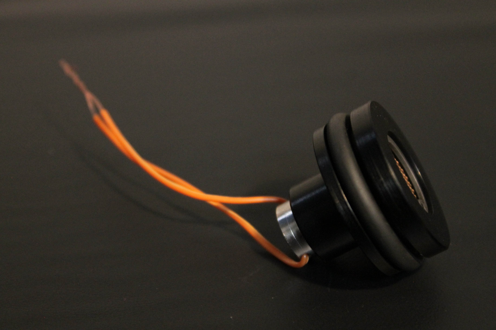
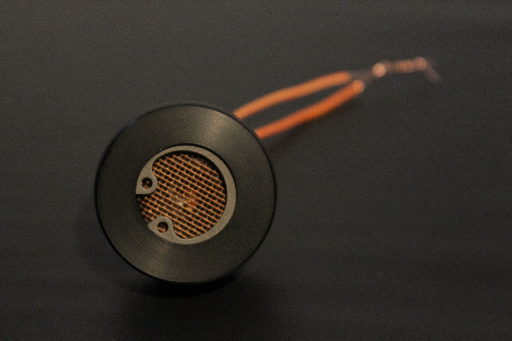
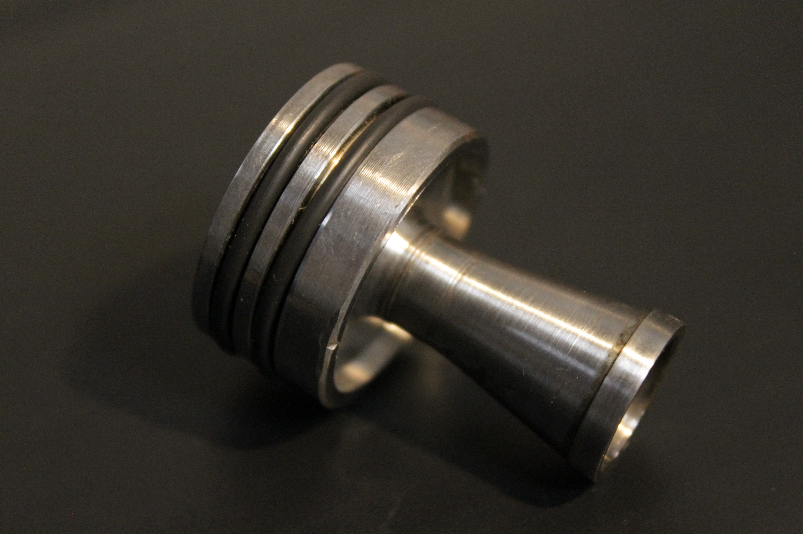
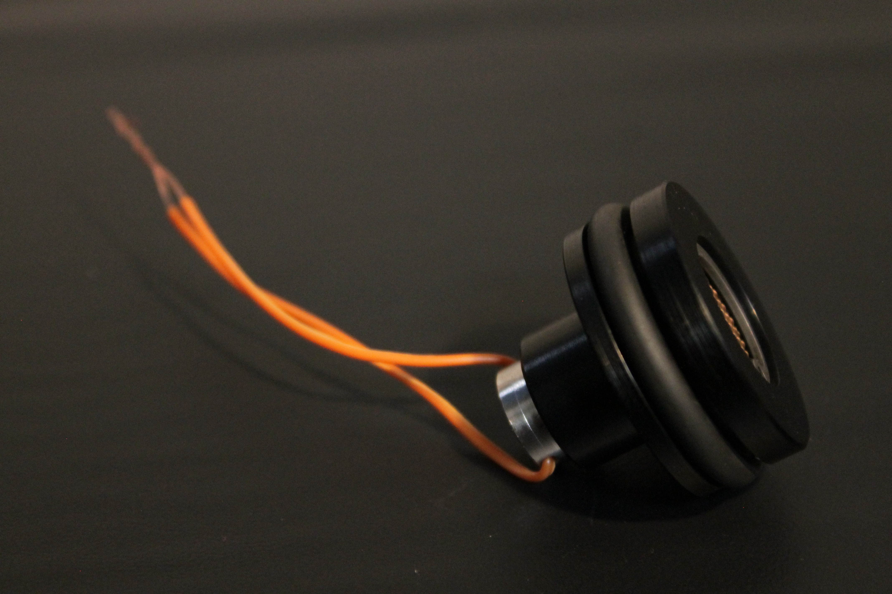
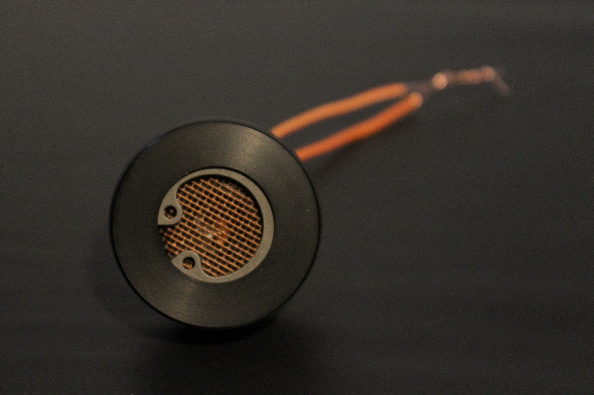
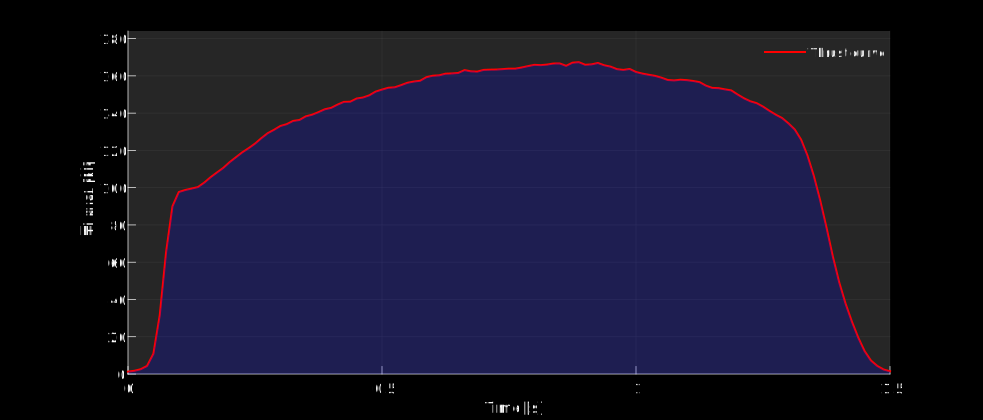

Introduction
Mutant 3 is a reusable rocket motor designed for use in small experimental rockets. It operates on a solid propellant composed of potassium nitrate and sorbitol. The motor features an integrated igniter that enables remote ignition from the rocket’s onboard computer, allowing for precise ignition timing and staged propulsion. This capability makes it a suitable for use as an upper-stage motor in multi-stage rockets.
Specifications
| Parameter | Value | Unit |
|---|---|---|
| Propellant | KNSB (65/35) | - |
| Max Thrust | 167 | N |
| Average Thrust | 128 | N |
| Burn Time | 1.5 | s |
| Specific Impulse | 136.8 | s |
| Total Impulse | 193 | Ns |
| Chamber Pressure | 32.5 | barA |
| Length | 225 | mm |
| Diameter | 35 | mm |
| Propellant Mass | 145 | g |
| Total Mass | 355 | g |
Design
The motor features a fully metallic design, enclosed on both ends using retaining rings. It consists of a stainless steel nozzle, and the casing and bulkhead are made of aluminum. The aluminum components have been anodized to enhance hardness and improve assembly compatibility. The propellant is divided into three Bates grains, designed to burn both radially and axially, ensuring a flat thrust profile. The igniter is inserted into the bulkhead after loading the ignition charge, which is suspended on a retainer just above the first propellant block. This design allows the motor to be armed shortly before integration into the rocket.
Photo Gallery
 





Tests
The motor was tested on a test stand based on a load cell, an HX711 module, and an Arduino board. The test stand enabled data acquisition at 80 Hz, with a measurement range of up to 200 N.
The figure below illustrates the thrust curve recorded during the test.
The footage captures the Mutant 3 motor during a static test.